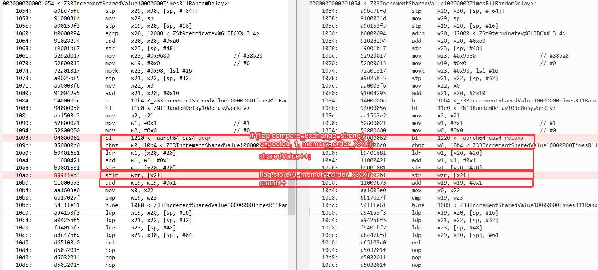

CPU memory order: Part3 weak memory ordering
As ARM follows weak memory ordering, all 4 types re-order is permitted. Below is a runtime detection refering to This Is Why They Call It a Weakly-Ordered CPU
git clone https://github.com/preshing/AcquireRelease.git
{CROSS_COMPILE}-g++ main.cpp randomdelay.cpp -o test -lpthread -O2
assembly code below:
0000000000001054 <_Z33IncrementSharedValue10000000TimesR11RandomDelay>:
1054:▸ a9bc7bfd ▸ stp▸ x29, x30, [sp, #-64]!
1058:▸ 910003fd ▸ mov▸ x29, sp
105c:▸ a90153f3 ▸ stp▸ x19, x20, [sp, #16]
1060:▸ b0000094 ▸ adrp▸ x20, 12000 <_ZSt9terminatev@GLIBCXX_3.4>
1064:▸ 91028294 ▸ add▸ x20, x20, #0xa0
1068:▸ f9001bf7 ▸ str▸ x23, [sp, #48]
106c:▸ 5292d017 ▸ mov▸ w23, #0x9680 ▸ // #38528
1070:▸ 52800013 ▸ mov▸ w19, #0x0 ▸ // #0
1074:▸ 72a01317 ▸ movk▸ w23, #0x98, lsl #16
1078:▸ a9025bf5 ▸ stp▸ x21, x22, [sp, #32]
107c:▸ aa0003f6 ▸ mov▸ x22, x0
1080:▸ 91004295 ▸ add▸ x21, x20, #0x10
1084:▸ 1400000c ▸ b▸ 10b4 <_Z33IncrementSharedValue10000000TimesR11RandomDelay+0x60>
1088:▸ 94000056 ▸ bl▸ 11e0 <_ZN11RandomDelay10doBusyWorkEv>
108c:▸ aa1503e2 ▸ mov▸ x2, x21
1090:▸ 52800021 ▸ mov▸ w1, #0x1 ▸ // #1
1094:▸ 52800000 ▸ mov▸ w0, #0x0 ▸ // #0
1098:▸ 94000062 ▸ bl▸ 1220 <__aarch64_cas4_acq>
109c:▸ 350000c0 ▸ cbnz▸ w0, 10b4 <_Z33IncrementSharedValue10000000TimesR11RandomDelay+0x60>
10a0:▸ b9401681 ▸ ldr▸ w1, [x20, #20]
10a4:▸ 11000421 ▸ add▸ w1, w1, #0x1
10a8:▸ b9001681 ▸ str▸ w1, [x20, #20]
10ac:▸ 889ffebf ▸ stlr▸ wzr, [x21]
10b0:▸ 11000673 ▸ add▸ w19, w19, #0x1
10b4:▸ aa1603e0 ▸ mov▸ x0, x22
10b8:▸ 6b17027f ▸ cmp▸ w19, w23
10bc:▸ 54fffe61 ▸ b.ne▸ 1088 <_Z33IncrementSharedValue10000000TimesR11RandomDelay+0x34> // b.any
10c0:▸ a94153f3 ▸ ldp▸ x19, x20, [sp, #16]
10c4:▸ a9425bf5 ▸ ldp▸ x21, x22, [sp, #32]
10c8:▸ f9401bf7 ▸ ldr▸ x23, [sp, #48]
10cc:▸ a8c47bfd ▸ ldp▸ x29, x30, [sp], #64
10d0:▸ d65f03c0 ▸ ret
10d4:▸ d503201f ▸ nop
10d8:▸ d503201f ▸ nop
make sure optimization level is -O2 so that flag.store() just precedes count++. Below is comparison between Acquire/Release memory model and Relaxed memory model. 
In Acquire/Release memory model, re-order is forbidded after load acquire/before store release. So you can see that stlr is used to implement release semantics
10ac: 889ffebf stlr wzr, [x21]
In Relaxed memory model, no re-ordering is forbidded. So str is used
10ac: b90002bf str wzr, [x21]
difference between stlr and str is that:
A64 adds new load and store instructions with implicit barrier semantics. The instructions are less restrictive than either DMB or DSB instructions. They also require that all loads and stores before or after the implicit barrier are observed in program order.
Load-Acquire (LDAR):All loads and stores that are after an LDAR in program order, and that match the shareability domain of the target address, must be observed after the LDAR.
Store-Release (STLR):All loads and stores preceding an STLR that match the shareability domain of the target address must be observed before the STLR.
However ldr & str doesn't have implicit barrier semantics, so re-order is allowed.
If we run this application on ARM Ares CPU, which supports out-of-order execution, re-order is detected as below:
# ./test
is_lock_free: true
sharedValue=19618777
sharedValue=19697796
sharedValue=19693566
sharedValue=19697246
sharedValue=19689454
sharedValue=19674865
sharedValue=19704563
sharedValue=19672579
sharedValue=19691453
sharedValue=19706577
sharedValue=19700628
sharedValue=19688644
sharedValue=19688454
sharedValue=19697910
sharedValue=19696821
sharedValue=19694087
sharedValue=19693936
sharedValue=19684349
sharedValue=19680494
sharedValue=19682880
sharedValue=19675949
sharedValue=19656381
sharedValue=19689995
sharedValue=19704096
If we run this applicaton on ARM Cortex-A53 CPU, which only supports in-order execution, re-order can't be detected as below:
# ./test
is_lock_free: true
sharedValue=20000000
sharedValue=20000000
sharedValue=20000000
sharedValue=20000000
sharedValue=20000000
sharedValue=20000000
sharedValue=20000000
sharedValue=20000000
sharedValue=20000000
sharedValue=20000000
sharedValue=20000000
sharedValue=20000000
sharedValue=20000000
sharedValue=20000000
sharedValue=20000000
sharedValue=20000000
sharedValue=20000000
sharedValue=20000000
sharedValue=20000000
sharedValue=20000000
sharedValue=20000000
sharedValue=20000000
sharedValue=20000000
sharedValue=20000000
sharedValue=20000000
sharedValue=20000000
sharedValue=20000000
sharedValue=20000000
sharedValue=20000000
sharedValue=20000000
sharedValue=20000000
sharedValue=20000000
sharedValue=20000000
sharedValue=20000000
This experiment proves that though ARM follows weak memory order, not all the arm cores is able to re-order Insturction and Memory, at least Cortex-A53(which only supports in-order execution) is not capable.